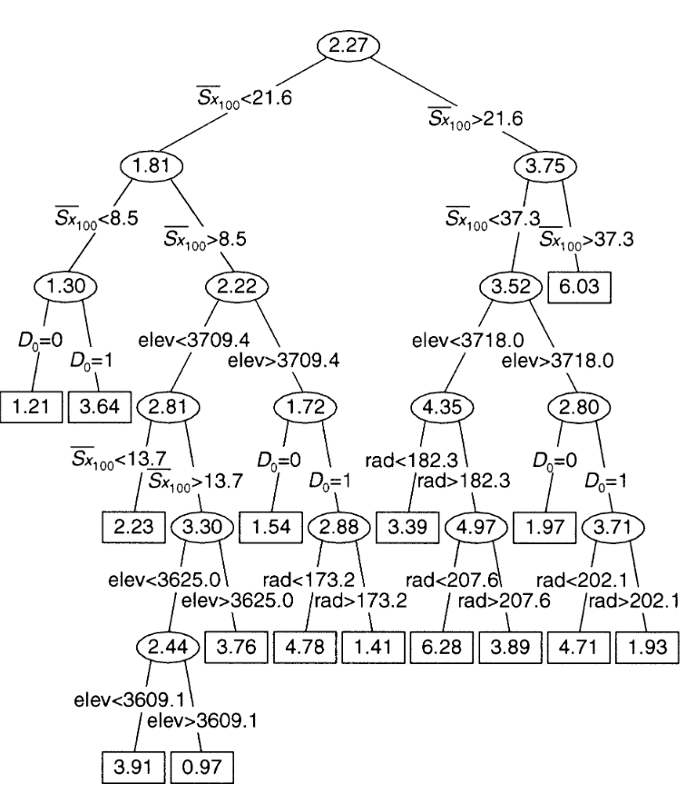
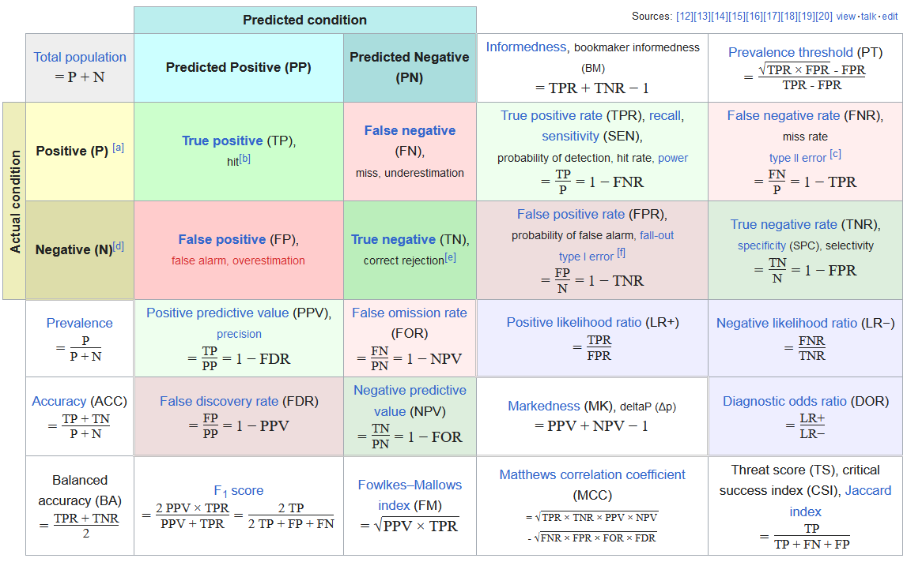
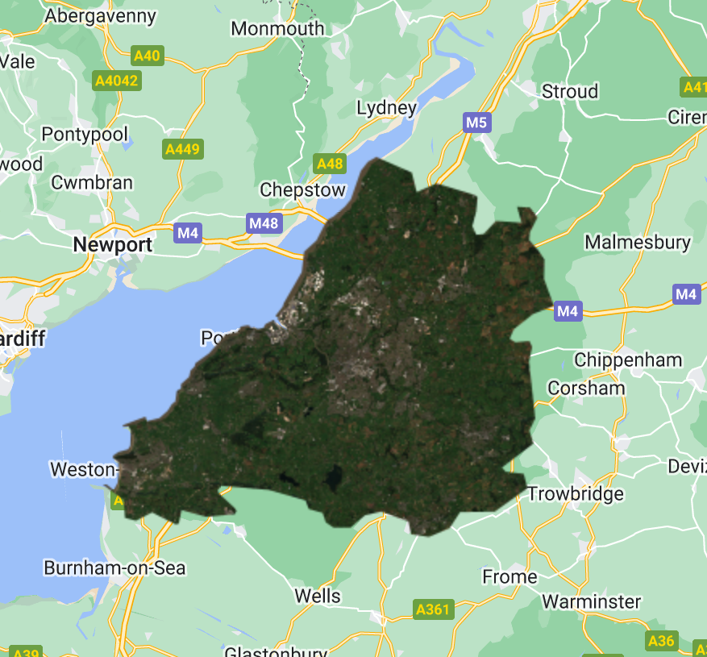
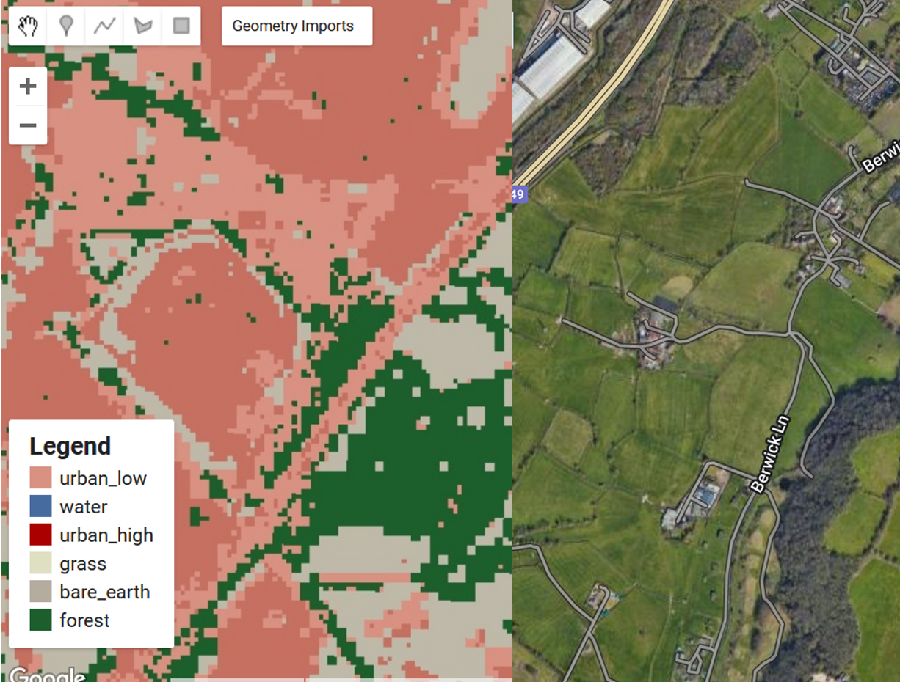
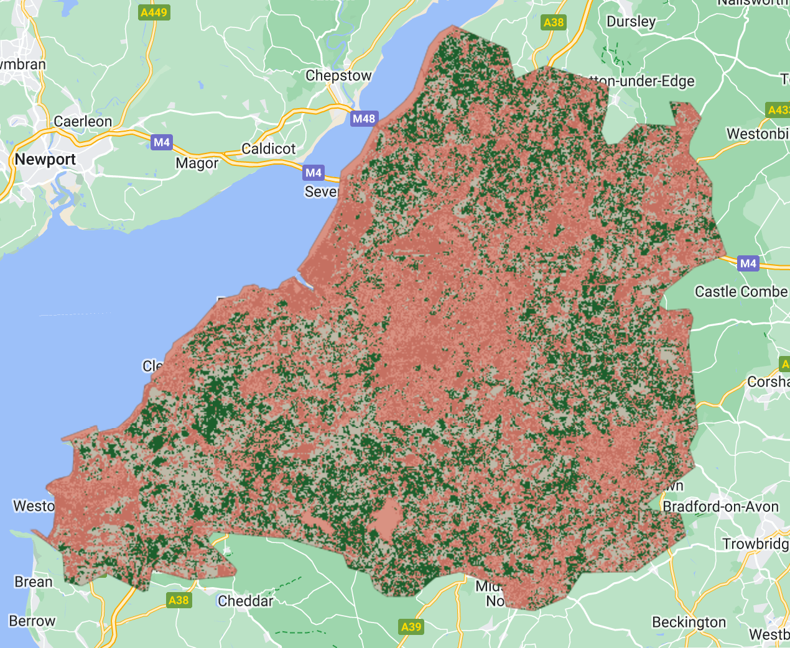
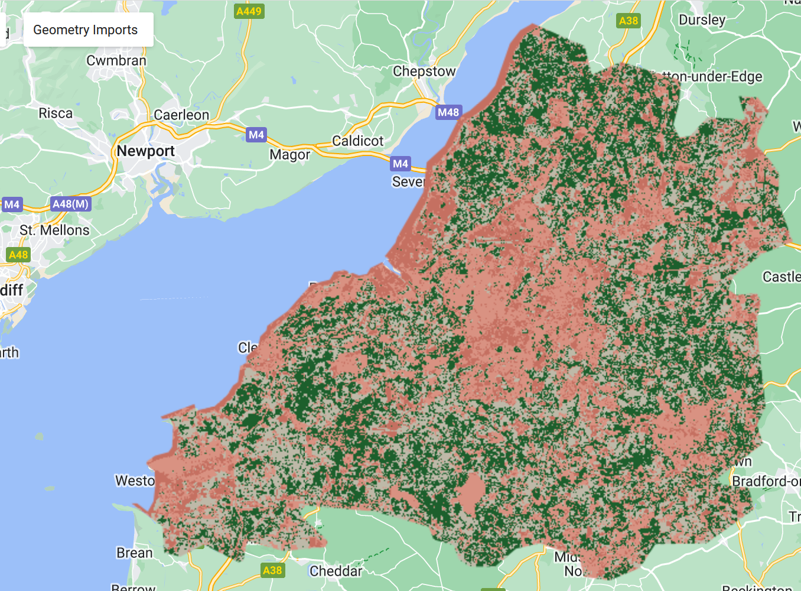
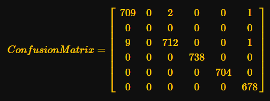
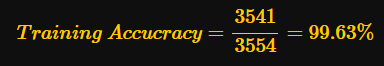
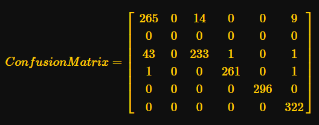

Week 7 Classification with Google Earth Engine I
For this week’s diary, I summarised a few classification methods and studies on classification methods in remote sensing. The lecture covered some common classification methods basics of classifying remote sensing data, and its applications.
Classification Methods
In the context of remote sensing, there are several common classification methods. These algorithms are designed to categorise data points. CART (Classification and Regression Trees) builds a tree-like structure where splits are based on the features that yield optimal separation the data. Random Forest (RF) combines multiple CARTs, which is a form of ensemble learning, to produce a more reliable outcome. SVM (Support Vector Machine) finds a best-fit hyperplane that divides the data into classes, offering good performance for high-dimensional data. Here is a visualised tree that I have found here:
Classification and Regression Trees (CART)
CART was originally proposed by Breiman et al. (1984) It is a type of predictive algorithm that can be used for both classification and regression. It splits data at each “node” with the goal of sub-setting the data into the target classes.

Starting at the root node, CART determines which split is optimal by examining all possible splits for each feature. Gini Impurity or MSE (Mean Square Error) are usually used for measuring the quality of classification or regression. Gini impurity is often measured to evaluate the purity of nodes. Other metrics like accuracy, recall, precision, and the F1 scores are also considered.
Random Forest
An ensemble learning method for classification, there is also RF regression, but I will focus on classification here. RF is often constructed by building a large group of decision trees i.e. CARTs. The classification result is the class selected by most trees.
The model building of RF starts with Bagging or Bootstrap Aggregating, this is essentially a re-sampling methods designed to improve RF’s stability. Each tree is then allowed to consider only a subset of data, then the class with most trees’ vote, was considered as the model output.
The performance of RF is assessed by Out-of-Bag Error. OOB is usually used for measuring models that involve Bagging. OOB records the average prediction error on each training sample and are often referred to in guiding the hyper-parameter-tuning regarding the trees. RF’s performance measurement also involves the ones derived from confusion matrices such as accuracy, recall etc. similar to CART.
Support Vector Machine (SVM)
SVM is a popular yet relatively lightweight model, with linear and nonlinear classification capacity. The fundamental principle for SVM is to search for a optimal hyper plane that best separates the data classes. SVM has many roots, many statisticians and computer scientists have proposed hyperplane-like methods before, but it was formally proposed and coined by Boser et al. (Boser, Guyon, and Vapnik 1992) in 1992.
To build a SVM, first we need to transform the data into a feature space in which each data point was regarded as a vector. Then we construct the hyperplane and adjust it till an optimal state (maximum margin hyperplanes) where the distance from it to the nearest data point on each side is maximised. The performance measurement for SVM is similar to other classification methods.
Confusion Matrix:
A confusion matrix is calculated to evaluate the performance of classification methods. It records, for example, each row indicates the actual class A is labelled by the model to be class A to Z. With confusion matrix we can calculate the following:
True Positives (TP): Correctly classified positive cases.
True Negatives (TN): Correctly classified negative cases.
False Positives (FP): Negative cases incorrectly classified as positive (Type I error).
False Negatives (FN): Positive cases incorrectly classified as negative (Type II error).
A detailed expansion of most of the confusion matrix metrics:

From such a matrix, we can calculate metrics such as Consumer’s/User’s accuracy used in the practical, which refers to the probability that a pixel classified into a given class actually represents that category in reality. It is calculated as follows:
Correct (True Positives): The number of instances where the model correctly identified as a specific class.
Total (True Positives + False Positives): The sum of instances where the model recognised to be in a specific class (correctly or incorrectly).
The Resubstitution Error Matrix used in the practical, is a confusion matrix calculated for training process. Testing confusion matrix is the confusion matrix for testing. The resubstitution Error Matrix is a tool for understanding the performance of a classification model, and it’s particularly useful for identifying the archetypes of errors a model tend to make, helping users to identify model limits. However, because it uses the same data for both training and testing, it does not realistically reflect the model’s performance on unseen data due to over-fitting, for that, testing confusion matrix is more relied upon. It is crucial to treat confusion matrix with caution, as it alone will not reduce variance or bias of the model, usually it is combined with additional validation techniques, such as k-fold cross-validation or a test on another validation dataset.
Practical Results Analysis




Overall results in GEE App:
Models Used in Practical
In the practical, we used the pixel-wise approach to divide the image pixel points randomly into training (70%) and validation (30%) sets. The training set was then fed to train a random forest to classify the image, and the the RF classifier classified the Bristol clip image to create a classified map. By visual assessment, the result for random forest with a pixel-wise split a significant improvement.
Interpreting the Model Metrics
Confusion matrix for training:

The overall training accuracy is calculated at:

For testing the confusion matrix is:

Testing Accuracy
This suggest a high testing accuracy, but it may also indicate over-fitting for we did not calibrate the model carefully and perform solid feature engineering. However, the results still proved that with performing train-test split the model tend to curb the over-fitting down. (the math component of Quarto had an upgrade with latex, my previous latex stopped working, thus I have replaced the math with screenshots of them.)
Classification in Remote Sensing
Classification plays a key role in information retrieval from the satellite images covering a wide range of applications. The first is identifying land cover types such as water, forest, grasslands, high/low urban areas, and agricultural fields. This application is crucial for environmental monitoring. Currently the researchers are employing deep learning techniques on RS classifications, with many pivotal works using methods such as Convolutional Neural Networks (CNN), autoencoders and Boltzmann Machines. (Yuan, Shi, and Gu 2021) Another important application with regard to urban context is to monitor the urban sprawl, mapping infrastructural changes.
However, there are major challenges to the current development in remote sensing classification:
Labelled Data Volume and Accuracy: The overarching reliance on supervised techniques such as CNN resulted in an ever-increasing demand of properly labelled data which is made more challenging by the fact that the complexity of remote sensing data makes extremely difficult to label. (Cheng et al. 2020)
Object Class Imbalances: EO data naturally have imbalanced classes in which certain classes are more prevalent than other classes which is risky for training models, (Wang et al. 2024) for instance, in a RS image of a city, the buildings will be more common than water. This can lead to the models performing well on popular classes and losing accuracy for rare cases similar to what happened in my practical run, where the model failed to identify the water in Bristol.
Computing Cost: Performing model training for more complicated models cost more energy and time, generating more demand on high-performance computation resources. (Tornede et al. 2023)
Therefore, paradigms such as Self-Supervised Learning, which can perform consistently on small amount of labelled data, are gaining more momentum recently. (Alosaimi et al. 2023) Further investigation into such areas, including Semi-Supervised Learning, is necessary and crucial for lowering the demand on labelling datasets. The innovation at the framework level for existing models is also important, for example, CMID (Contrastive Mask Image Distillation) is proposed to offer a novel Self-Supervised Learning approach that performs more consistently across various tasks types. (Muhtar et al. 2023) Another prespective is that innovation could also focus on is the improvement of understanding the RS image series, with potential integration of reinforcement learning (Subramanian and Crowley 2017) to optimise model performance across time which I will focus in week 8.
Reflection
For this week’s practical, the model probably did not capture Bristol’s rivers, this is probably caused by the model’s inability to tell the water from high urban input, likely attributed by my selection of input polygons. I’m curious about water identification in an urban context, as it is important to identify the water body at a pixel and object level. (Huang et al. 2015)
In addition, recalling my previous learning experience with learnt index in B-tree and R-tree algorithms, I could not help but to review the symbiotic relationship between statistics and computer science as the fundamentals of ML are often intriguing. This review further illustrate me the transformative impact of inter-disciplinary research on statistical learning, sort of a Midas touch to what fueled the current phase of machine learning research and application.
While time and space constraints precluded my more detailed revisit to Naive Bayes and GMM, they are interesting models nonetheless, both are still popular in the IT industry. These models are swift for everyday tasks such as email spam filtering and customer segmentation, but for imagery tasks in remote sensing their capacity may be limited, especially when it is difficult for GMM to determine optimal number of classes. With my endeavor into remote sensing and other machine learning paradigms such as SSL or RL, I would also propose that continuing updating the framework and innovating towards potential paradigm shifts of classification for remote sensing is still of high significant.